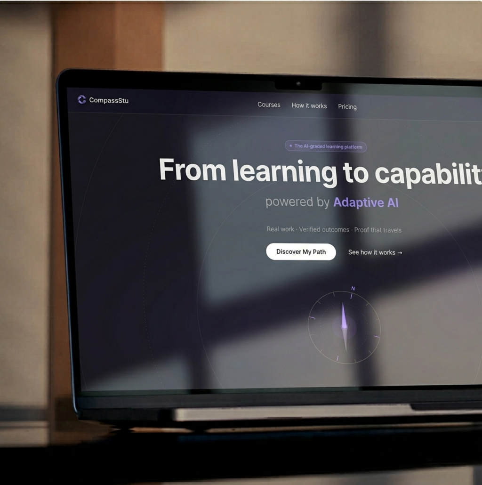
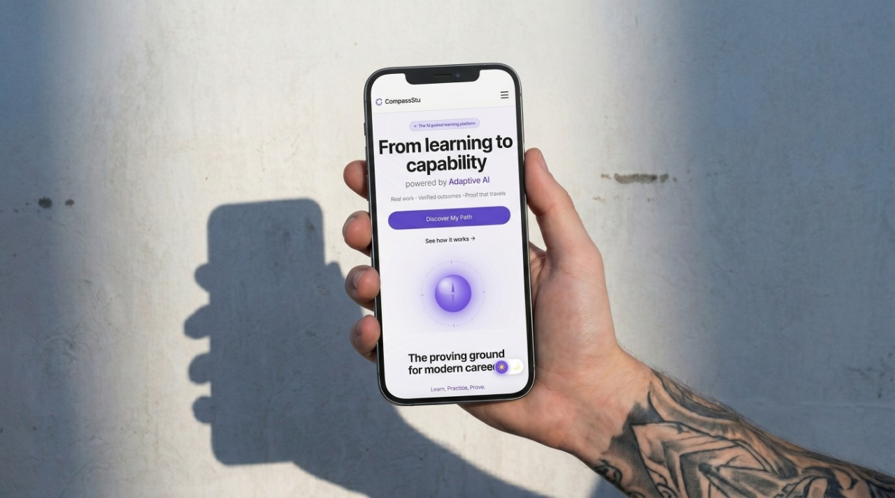
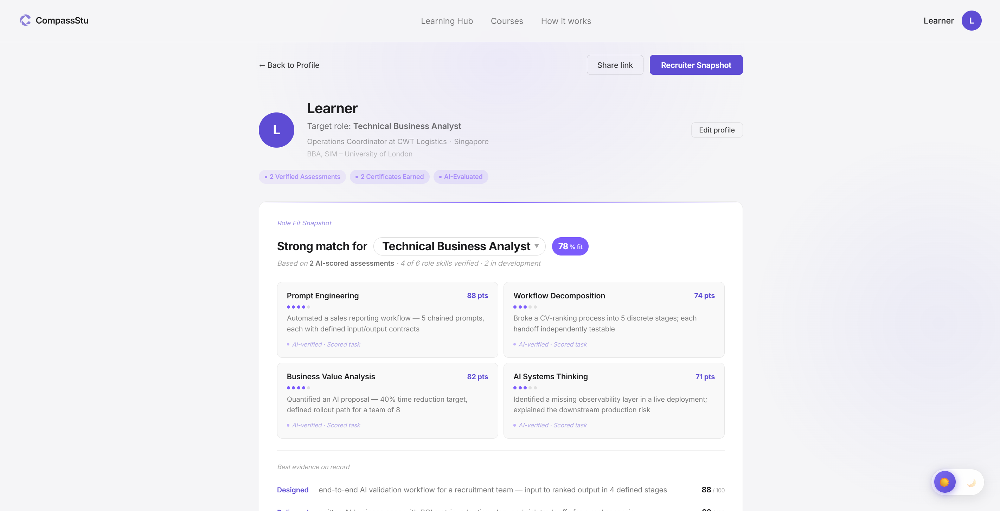
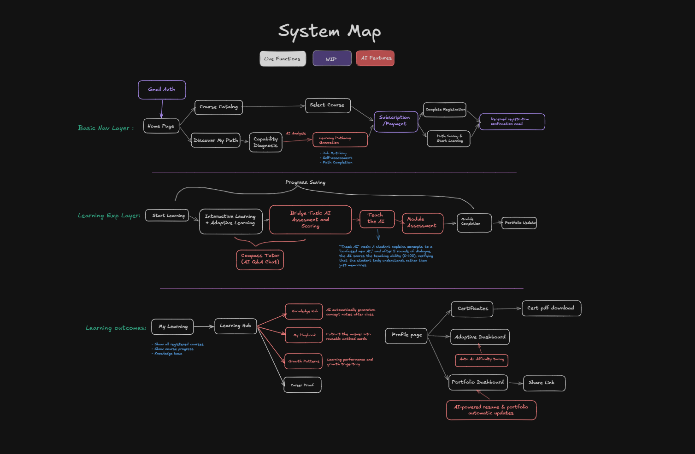
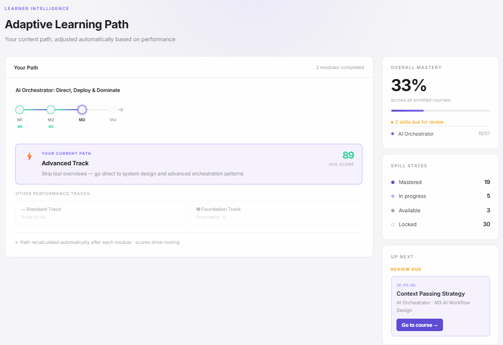
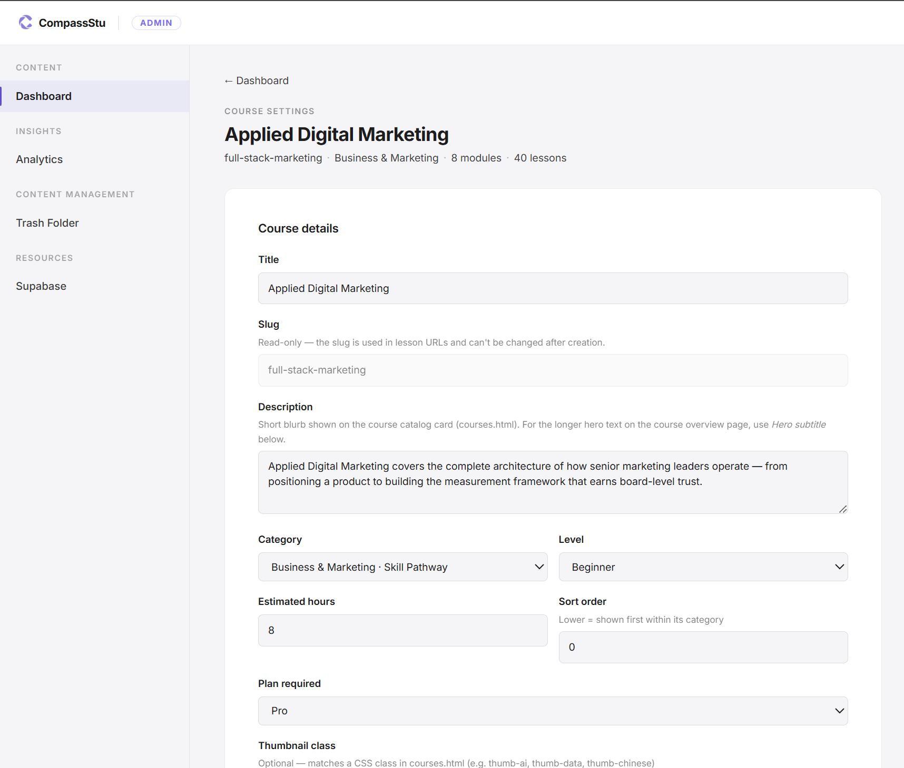
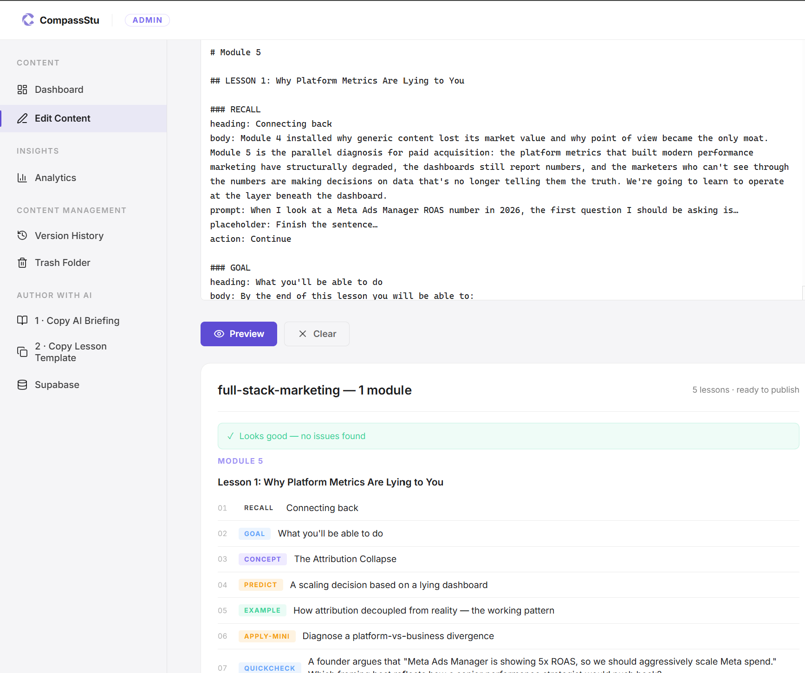

CompassStu

A learning platform built to produce candidates, not completions.
Most platforms measure progress in videos watched.
01 Overview
CompassStu measures it in work demonstrated — AI-graded against a four-dimension rubric.
Scored, signed, and shareable as a single URL an employer can verify in a click.
Time-stamped. Immutable.
One runtime. Three learning engines.
Adaptive paths. Fixed standard.
02 The Problem
The adult upskilling industry is large, well-funded, and broken at the seam that matters most — the handoff to a job.
Today's platforms compete on catalog size and completion rate. They measure what is easy to count: hours watched, modules finished, certificates issued. None of it tells an employer whether the learner can do the work.
The result is a market full of certificates no one trusts.
Recruiters discount them.
Hiring managers ask for take-home tests anyway.
Learners pay for signal that does not carry.
- What platforms count.
- Hours watched. Courses completed.
- What employers need.
- Work demonstrated. Standards met.


03 Product Thesis
We do not sell knowledge. We produce candidates.
Every course is built on the same three-layer pipeline.
- Learn.
- Active recall, not passive video. Eight-to-ten minute lessons engineered for attention.
- Simulate.
- AI-graded bridge tasks. Real work, scored against a four-dimension rubric.
- Prove.
- A timestamped, verifiable record an employer can read in a single URL.


04 System Map
Three layers. Each owns a phase of the user journey. End-to-end, they form a single pipeline from authentication to portfolio sharing.
Basic Nav Layer
Entry and routing.
Gmail Auth → Home Page → two paths: Course Catalog or AI-led Discover My Path (Capability Diagnosis → Pathway Generation). Both converge at Subscription → Start Learning.
Learning Exp Layer
Core delivery. Progress Saving spans the layer.
Pipeline: Start Learning → Interactive + Adaptive Learning → Bridge Task → Teach the AI → Module Assessment → Completion → Portfolio Update.
Compass Tutor attaches throughout. Teach the AI scores comprehension 0–100 over five rounds.
Learning Outcomes Layer
Output and persistence.
My Learning aggregates progress. Learning Hub feeds four AI artefacts: Knowledge Hub, My Playbook, Growth Patterns, Career Proof. Profile Page surfaces Certificates, Adaptive Dashboard, and Portfolio Dashboard with public Share Link.
05 Three Learning Engines
One seamless architecture. Three dimensions of mastery.
The methodology remains beautifully consistent; the intellectual demand is entirely bespoke. Our unified
learning pipeline — Learn, Simulate, Prove — is powered by three distinct cognitive engines.
Concept Engine
Engineered for strategic intellect and high-stakes judgment. This engine refines the abstract — transforming complex frameworks and persuasive communication into sharp decision-making under pressure. Rather than grading on a simple binary, performance is calibrated against cognitive clarity, structural depth, and contextual relevance.
Operator Engine
Engineered for flawless execution and technical precision. Built for environments where theory must answer to unyielding reality, this engine demands absolute tactical mastery — deploying infrastructure, executing flawless syntax, and conquering systemic friction. Success is measured by the structural resilience and elegance of the solution.
Analyst Engine
Engineered for absolute validation and empirical certainty. Designed for data-driven environments, this engine challenges learners to isolate critical signals, architect robust methodologies, and confidently defend their conclusions. It enforces total rigor, validating the precision of the final outcome alongside the ironclad logic that built it.
06 Learning Experience Design
A CompassStu lesson lasts eight to ten minutes. It runs on a three-panel page and a vocabulary of twelve cards.
The page
A fixed grid. Module navigation on the left, one card in the centre, the tutor panel on the right. Nothing else moves. Only the card area scrolls.
The cards
Each lesson uses seven to twelve cards. Every card gates the next — a prediction has to be revealed, a quick check answered, an apply question written before the learner can advance. The first required input arrives within forty-five seconds.
The close
The final card is a mastery check — two short questions and a confidence selection. On submit, the lesson is marked complete and the learner is handed off to the bridge task, where the work that earns the certificate begins.
07 Compass Tutor
An AI coach built into every lesson — course-aware, bilingual, and incapable of answering outside its scope.
Compass Tutor runs inside every lesson. It knows the course, the module, and the card the learner is on. Every reply it generates is passed through a second AI check — any answer that contradicts the lesson is blocked before it reaches the screen.
In teach-back mode, the learner explains a concept in their own words and the tutor evaluates comprehension, surfacing exactly what was missed.
- Course-Aware Context.
- Scoped to the current lesson. Never answers outside the curriculum boundary, regardless of how the question is phrased.
- Bilingual.
- Responds in English or Mandarin based on the course language — no setting to switch.
- Teach-Back Mode.
- Learner explains the concept back; the AI evaluates comprehension and flags the specific gap.

08 Adaptive AI Engine
After every module, the system reads the learner's score and routes them into one of three tracks: Advanced (≥ 85%), Standard (70–84%), or Foundation (< 70%). The certification bar never moves — only the scaffolding adapts.
- Real-Time Recalibration.
- Route assigned instantly after each module. No wait, no manual review.
- Smart Recommendations.
- AI surfaces the next highest-priority skill and queues targeted review automatically.
- AI Path Diagnosis.
- On first sign-in, a capability assessment generates a personalised learning-path recommendation before the learner picks a single course.
Skill Map
Every course auto-generates a live visual graph of atomic skills. Each node sits in one of four states — updated after every interaction without manual setup.
09 The Proof Layer
Every bridge task that clears its four-dimension rubric earns a permanent record — GPT-4o graded, timestamped, and posted to a single URL. The learner owns it; employers verify it in a click. Each record carries the work itself — the task, the response, and the score — all on one page.
- Graded by GPT-4o.
- Four dimensions: relevance, structure & logic, professional quality, specificity & depth. Localized rubric for Mandarin-language courses.
- What comes back.
- A score (0–100), a headline verdict, specific feedback, one named strength, and one concrete improvement — every time.
- Pass threshold: 70.
- Up to five graded attempts. After the fifth, an automatic pass ensures no learner is permanently blocked by a single task.
- Certificates are permanent.
- They survive any progress reset. Proof of prior work is never lost, even if a learner restarts a course.
10 Learning Hub
Every lesson compounds into a personal knowledge base built entirely from your own work.
Most platforms forget you between sessions. CompassStu accumulates. Every answer you write, every bridge task you submit, every tutor exchange you have — all of it feeds four AI-powered layers that grow with you automatically.
No manual note-taking. No tagging. The system builds your knowledge base while you learn.
Role Fit Snapshot
Your certificates evaluated in parallel against three target roles.
Knowledge Hub
AI-summarized notes generated automatically from every lesson you complete — a personal knowledge base that grows without any manual effort. Ask it a question and it answers grounded only in your own notes, not the internet.
Ask my notesMy Playbook
AI scans your highest-scoring bridge-task responses and extracts the reusable methods and frameworks inside them. A growing library of your own techniques — not generic best practices, but the specific approaches that worked for you.
Growth Patterns
AI reads across all your submissions to name your recurring strengths and blind spots — quoting your actual words back. Coaching grounded in your real work, not an anonymous rubric average.
Career Proof
AI-generated proof cards that translate your scored submissions into language an employer reads: demonstrated competencies, performance tier, and the specific evidence behind the claim. Not a certificate — a case for your hire.
Shareable public link · employer-readable11 Content Operation
An admin portal lets the content team publish courses end-to-end — no developer required. A markdown→JSONB pipeline writes directly to the database; a publish is live on the next page load.
- Dual-runtime parser.
- One parser, two runtimes — Node CLI for batch ingest, browser module for in-editor publish.
Output: typed JSON into
lessons.lesson_data. - Round-trippable format.
- JSON re-hydrates to editable markdown automatically. No export step, no stale drafts.
- Idempotent publish, 24h rollback.
- Upsert on
(course_slug, module_number, lesson_number). A DB trigger snapshots prior rows intolesson_versions— version history without app code. - Live AI tutor config.
- Tutor prompt and scope live in
course_ai_context, read on every chat turn. Admin saves reflect instantly. - Course Discovery Index.
- Every publish writes course structure and objectives into the discovery index. Discover My Path reads this in real time — no manual tagging, no developer updates. New course. Live recommendations.


12 Pathway Ecosystem
We don’t sell courses. We build careers — one verified milestone at a time.
Isolated courses are a commodity — learners finish, earn a certificate, and walk away with no map of what’s next. CompassStu builds structured pathways from beginner to specialist, where each tier unlocks only after AI-verified work samples pass.
- Category tracks, not course catalogs.
- Each pathway maps a domain end-to-end. Learners enter a track; the platform routes them forward based on assessed performance, not manual curation.
- High-demand pathways only.
- Three tracks: AI Product Development, Prompt Engineering & LLM Ops, AI-Augmented Business Analysis. Depth over breadth.
- Retention locked by design.
- A learner mid-pathway has verified competency records and a visible next milestone. Switching platforms means starting over — stickiness by structure, not gamification.
AI Product Thinking
Problem framing, model selection, AI product scoping. Assessment: brief graded against six practitioner criteria.
Prompt Systems & LLM Integration
Prompt systems, RAG, and evaluation loops. Assessment: pipeline graded on consistency and failure-mode coverage.
AI Product Launch & Iteration
GTM strategy, feedback loops, model-improvement cycles. Assessment: launch retrospective with documented iteration decisions.
13 Brand & Visual Design
Shipped in 3 months — sole owner across product, design, and engineering.
The design system is a direct response to CompassStu's thesis: translating its outcomes-over-completion promise into a premium, restrained visual identity defined by Inter, one violet accent, and alpha-based neutrals.